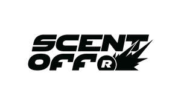

Trade Mark Journal No.2025/021 23 May 2025
UK00004202078 12 May 2025 (3)

- Class 3
- Body washes, Lotions for the skin, Skin lotions, Skin moisturizer, Cleaning preparations, Aftershave, Shower and bath gel, Body shampoos, Antiperspirants [toiletries], Bath and shower gels, Bath and shower gel, Skin cleansing lotion, Oils for perfumes and scents, Scouring preparations, Skin cleansing cream [non-medicated], Exfoliants for the care of the skin, Aftershave balms, Skin lotion, Essential oils, Skin hydrators, Bleaching preparations and other substances for laundry use, Bath gel, Shower gel, Bath gels, Body deodorants, Bleaching preparations for laundry use, Skin cleansers, Personal deodorants, Anti-perspirants in the form of sprays, Cosmetics, Aftershaves, Anti-perspirant preparations, Perfume water, Feminine deodorant sprays, Bath and shower oils [non-medicated], Abrasive preparations for use on the body, Body soap, Deodorants for personal use [perfumery], Cologne, Antiperspirants, Bath and shower preparations, Fragrance emitting wicks for room fragrance, Deodorant for personal use, Shower gels, Body oils, Hair and body wash, Skin moisturiser, Musk [perfumery], Perfumes, Bleaching preparations, Skin moisturizers, Body spray, Eau de cologne [cologne water], Perfumery and fragrances, Deodorants for the feet, Essential oils as perfume for laundry purposes, Bath lotion, Non-medicated antiperspirants, Body mist, Colognes, Preparations for the bath and shower, Body wash, Perfume, Scents, Scented oils, Abrasive preparations, Body scrub, Perfumery products, Bath and shower gels, not for medical purposes, Preparations for use in the bath or shower, Antiperspirant soap, Perfumery, Aromatherapy lotions, Eau de colognes, Aftershave lotions, Skin cleansers [cosmetic], Moisturising skin lotions [cosmetic], Foot deodorant spray, Bath gels (Non-medicated -), Liquid bath soaps, Eaux de cologne, Cologne water, Bath lotions (Non-medicated -), Body fragrances, Moisturizing preparations for the skin, Skin moisturizers used as cosmetics, Anti-perspirant deodorants, Soap (Antiperspirant -), Body moisturisers, Skincare cosmetics, Natural oils for perfumes, Skin moisturisers, Body cleansing foams, Shower and bath preparations, Cleaning and fragrancing preparations, Perfume oils, Roll-on deodorants [toiletries], Anti-perspirants, Body lotion, After-shave, Deodorants and antiperspirants, Cleaning preparations for personal use, Fragrance sachets, Eaux de Cologne, Fragrances, Aromatherapy preparations, Body sprays, Oils for the skin.
Keenan Okezie